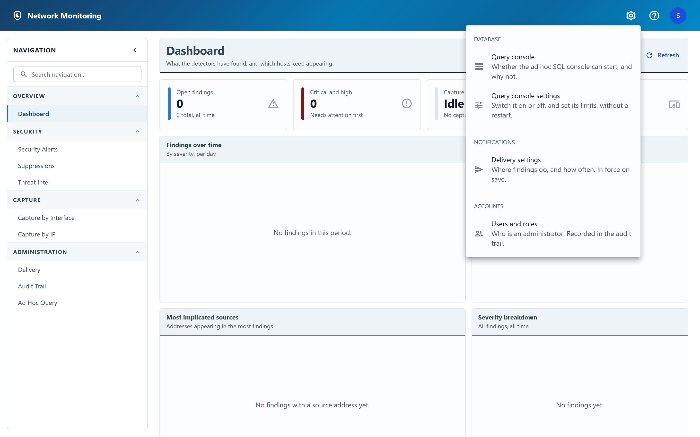

Administration settings
The gear in the header: server settings an administrator can change without editing a file or restarting anything.
The gear appears only for administrators. Everything behind it is refused to anyone else by the server as well, so the hidden gear is a tidier interface rather than the thing keeping you out.

Each tool opens in a panel you can drag by its title bar, so you can move it aside to read the page underneath — usually the numbers you are trying to reconcile with the setting you are changing. On a phone it fills the screen instead, because a floating panel in a narrow window is a panel with no margins.
This menu is for setting things, and every entry is a form or an action. If you are looking for a panel that only reports — why the query console will not start, or whether flow data is arriving — it lives on the screen it describes: Ad hoc query and Flow collection respectively. The query console's diagnostics used to open from here as well, which meant a row under Administration settings that changed nothing when you opened it.
What is in it
| Group | Tool | What it is for |
|---|---|---|
| Database | Query console settings | Switch the ad hoc SQL console on or off, set its password and its limits. In force on save. |
| Notifications | Delivery settings | Where findings go and how often — see Delivery settings. |
| Sensors | Decommission a sensor | Delete everything a retired sensor recorded — see Retiring a sensor below. |
| Accounts | Users and roles | Who is an administrator. See Who can do what. |
The rule that applies to all of them
Every setting here resolves in three layers, and the environment wins:
environment variable → stored setting → built-in defaultIf a setting is present in the server's api/.env or its Compose file, the
control for it is shown but disabled, with the name of the variable that
pinned it. That is deliberate: a deployment that keeps its configuration in a file is
meant to keep that guarantee, and a form that accepted your edit and changed nothing
would be worse than one that visibly cannot.
To manage a pinned setting from here instead, remove its line from the server's configuration and restart the API. Nothing is lost by doing so: whatever the variables said was copied into the stored settings the first time the server started, so removing a line keeps the behaviour you had rather than reverting to a default nobody chose.
Deleting a line from the server's configuration does not switch a setting
off. Whatever those variables said was copied into the stored settings the
first time the server started, so removing one leaves the stored copy in force and the
behaviour unchanged — which is the point, for most settings. But for the query
console it means removing ADHOC_ENABLED does not stop it. Switch
it off here, or set ADHOC_ENABLED=false rather than deleting it.
A blank value counts as unset. NOTIFY_ENABLED= with
nothing after it is somebody who has not decided, not somebody who chose "no" —
so it does not pin the field. The shipped Compose file and example environment pass
every one of these through blank for exactly that reason.
Retiring a sensor
More than one installation can write to one database, and every finding, device and aggregated day is stamped with the name of the sensor that recorded it. That name has no registration step and no way to remove it: a sensor is simply whatever has written something. So when a sensor is retired — a machine replaced, a branch closed, a container that came back under a different name — its rows stay where they are, and it goes on appearing in the Sensor filter and the device list for ever.
Retention does not clear them either, and that is not an oversight. Devices expire only after a period of not being seen, measured from that sensor's own last sighting — which stops moving when the sensor does, so its newest devices never become old enough. Findings do expire, but they are aggregated into a daily summary on the way out, and that summary is deliberately never deleted.
This tool is the way out. It lists every sensor other than this one, with how many findings, devices and aggregated days are recorded under each, and when it was last heard from. Choosing one and confirming deletes all of it, along with its record of what it was last asked to capture.
The findings, the devices and the aggregated history are gone, and nothing else in the product holds a copy. The audit trail entry — who did it, which sensor, and how much was removed — is what remains. Read the counts in the confirmation before you agree to them: that is what they are there for.
This installation is never offered, and the server refuses it even if asked directly. Its detectors are running, so the rows would come back immediately — a device on the next frame it decodes, a finding on the next detection — leaving a half-emptied sensor and nothing to say why. Worse, the device list is what tells the new-device detector which machines it has already seen, so emptying it for a live sensor reports every machine on the network as new all over again. To empty the current sensor's findings, use Clear all on the Security findings page instead.
A sensor that is still writing is refused for the same reason, even though it is somebody else's machine. Any sensor heard from in the last quarter of an hour is marked still writing and its button is disabled: the damage is the same as decommissioning this one, it just happens on a host you are not looking at. Stop that sensor, or wait until it has gone quiet, and the row becomes available on the next refresh.
It is read from the most recent finding or device sighting recorded under that name, so it is a good signal for a sensor watching a busy segment and a poor one for a sensor watching an idle one. A sensor that is running but has seen no traffic at all for fifteen minutes will not be marked, because nothing in the database distinguishes that from a sensor that has been switched off. Know that the sensor is really retired before you retire it — this check is a safety net, not an answer.
One more refusal you may see: the retention sweep is running. Retention and a decommission both rewrite the aggregated history, so they take turns rather than overlap. Nothing has changed when you see it; try again in a few minutes.
Everything here is recorded
Each change writes a row to the audit trail naming who made it and which fields changed. Secrets are recorded as having changed, never as their value — the trail cannot be edited or deleted, so a password written into it would be there for good.
Administrators only. The gear is not shown to anyone else, and every endpoint behind it refuses a non-administrator regardless.